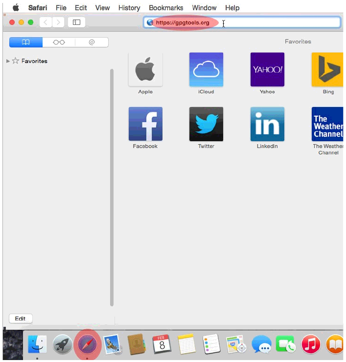

دانلود دستی و آماده کردن دبیان بر روی Mac OS X
نکته مهم: این بخش از راهنما به صورت تجربی است. ممکن است نتیجه مورد نظر بدست نیاید و در بدترین حالت سیستم بوت نشود. علاوه بر این متدی که در فصل دوم بخش - ب تشزیح شده است در صورتی که بخواهید فلش درایو را بر روی کامپیوتر دیگر استفاده کنید ممکن است کار نکند. اگر میخواهید این راهنما را برای کامپیوتر اپل استفاده کنید.لطفن از تمام اطلاعاتتان بک آپ گرفته و آن را بر روی یک درایو اکسترنال بریزید تا در صورت غیر قابل استفاده شدن کامپیوتر اپلتان بتوانید به اطلاعاتتان به راحتی دسترسی داشته باشید.
۱. مرورگر سافاری خور را از طریق منوی dock باز کرده و به آدرس زیر بروید:

۲.زمانی که صفحه باز شد به پایین صفحه بیاید تا زمانی که لینک Download GPG Suite را ببینید.بر روی لینک کلیک کنید دانلود شما به صورت اتوماتیک آغاز گردیده و شما را به صفحه کمک مالی هدایت میکند.
۳.زمانی که دانلود به اتمام رسید بر روی آیکون Downloads که در قسمت بالا و راست مرورگر سافاری قرار دارد کلیک کرده و بر روی فایل نصاب GPG Suite دوبار کلیک کنید.
۴. زمانی که نصاب GPG Suite باز شد بر روی آیکون Install دوبار کلیک کنید.
۵. در صفحه بعد بر روی Continue کلیک کنید.
۶. در صفحه بعد بر روی Install کلیک کنید
۷. سپس از شما پسوردتان خواسته می شود پسوردتان را وارد کرده و بر روی Install software کلیک کنید.
۸. زمانی که دانلود تمام شد بر روی Close کلیک کنید. حالا شما میتوانید پنجره نصاب GPG Suite را ببندید.
۹. اگر بخواهید میتوانید تمام پنجره های مرتبط با برنامه GPG در سافاری را ببندید. سپس بر روی آیکون Launchpad در dock کلیک کرده و terminal را تایپ کرده و بر روی آیکون Terminal که نمایش داده می شود کلیک کنید.
۱۰.زمانی که پنجره ترمینال ظاهر شد در گام بعدی باید کلید امضای دیجیتال سی دی دبیان را وارد کنید.در ترمینال تایپ کنید:
gpg --recv-keys DF9B9C49EAA9298432589D76DA87E80D6294BE9B
پس از آنکه وارد کردن کلید با موفقیت انجام شد بر روی صفحه نمایش باید چیزی شبیه به تصویر زیر ببینید.
۱۱. در ادامه باید اثر انگشت کلید امضای سی دی دبیان را را تأیید کنید پس تایپ کنید:
gpg --fingerprint DF9B9C49EAA9298432589D76DA87E80D6294BE9B
خروجی باید چیزی شبیه به برنامه زیر باشد در غیر این صورت از مرحله ۱۰ دوباره شروع کنید.
۱۲. حال نوبت دانلود فایل ISO نصاب دبیان است.
اگر سی پی یو ۳۲ بیتی یا ۴ گیگ رم یا کمتر دارید تایپ کنید:
curl -L -O https://cdimage.debian.org/mirror/cdimage/archive/7.11.0/i386/iso-cd/debian-7.11.0-i386-netinst.iso
و Enter کنید.
اگر از سی پی یو ۶۴ بیتی استفاده میکنید تایپ کنید:
curl -L -O https://cdimage.debian.org/mirror/cdimage/archive/7.11.0/amd64/iso-cd/debian-7.11.0-amd64-netinst.iso
و Enter کنید.
۱۳. حالا نوبت دانلود فایل هش checksum است که بررسی میکند فایل ISO دبیان دستکاری نشده باشد.
اگر سی پی یو ۳۲ بیتی یا ۴ گیگ رم یا کمتر دارید تایپ کنید:
curl -L -O https://cdimage.debian.org/mirror/cdimage/archive/8.7.0/i386/iso-cd/SHA512SUMS
و Enter کنید.
اگر از سی دی یو ۶۴ بیت استفاده میکنید تایپ کنید:
curl -L -O https://cdimage.debian.org/mirror/cdimage/archive/8.7.0/amd64/iso-cd/SHA512SUMS
و Enter کنید.
۱۴. حال فایل امضا GPG را دانلود کنید تا تأیید شود که checksum دبیان دست کاری نشده باشد.
اگر از checksum سی پی یو ۳۲ بیتی(i386) در بخش قبل استفاده کردید؛ تایپ کنید:
curl -L -O https://cdimage.debian.org/mirror/cdimage/archive/8.7.0/i386/iso-cd/SHA512SUMS.sign
و Enter کنید.
اگر از checksum سی پی یو 64 بیتی در بخش قبل استفاده کردید؛ تایپ کنید:
curl -L -O https://cdimage.debian.org/mirror/cdimage/archive/8.7.0/amd64/iso-cd/SHA512SUMS.sign
و Enter کنید.
۱۵. حالا باید دانلودتان را تأیید کنید. این به شما کمک میکند تا اطمینان داشته باشد که از ورژنی از دبیان استفاده میکنید که دستکاری نشده است.در این گام شما صحت checksum را تأیید می کنید. پس تایپ کنید:
gpg --verify SHA512SUMS.sign SHA512SUMS

خروجی دستور بالا باید چیزی شبیه به تصویر زیر باشد با پیام good signature هر چند اگر خروجی پیام bad signature بود. دانلود شما یا فایل کلید شما خراب یا دستکاری شده است. اگر خطای bad result را گرفتید از مرحله ۱۲ دوباره شروع کنید.
توجه: شما میتوانید هشدار (warning) مبنی بر key is not certified را نا دیده بگیرید. این پیام به مقوله ما مرتیط نیست.
۱۶. حالا تأیید کنید که فایل ISO دبیان شما خراب نیست و دستکاری نشده است. پس تایپ کنید:
- cat SHA512SUMS |egrep netinst |shasum -c
نکته:سمبلی که به صورت یک خط عمودی وجود دارد pipe نامیده میشود بر روی کیپورد Apple OS معمولاً از طریق فشردن کلی shift و کلید \ که در بالای Enter قرار دارد قابل دستیابی است.
شما باید پیامی دریافت کنید که میگوید ورژن دبیانی که دانلود کردهاید OK است چیزی شبیه به تصویر زیر اگر غیر از این بود به مرحله ۱۲ بروید.
نکته: مرحله بعد ریختن فایل image بر روی فلش USB میباشد اگر شما میخواهید ISO نصاب دبیان را بر روی CD رایت کنید پس اینکار را انجام دهید و به بخش - د بروید.
۱۷.حالا نیاز به تبدیل فایل ISO دبیان به فرمتی را دارید که بتواند توسط USB فلش بر روی MAC بوت شود.پس دستور زیر را تایپ کرده و Enter کنید.:
for f in debian-*-netinst.iso; do hdiutil convert -format UDRW -o debian.img $f; done
۱۸. حال تایپ کنید diskutil list و Enter کنید
این دستور به شما دیسک های در دسترس بر روی سیستمتان را نشان میدهد که چیزی شبیه به تصویر زیر خواهد بود. به یاد بسپاریدشان.
۱۹. حالا یو اس بی فلشی که میخواهید یه عنوان دیسک نصاب استفاده کنید را قرار دهید و دستور زیر را وارد کنید و بر روی Enter کلیک کنید.
diskutil list
دیسک شما به لیستی که در دستور قبل دیدید اضافه خواهد شد. نام آن شبیه /dev/disk2 می باشد. هرچند بر حسب تعداد دیسک ها یا پارتیشن هایی که بر روی سیستمتان دارید ممکن است نام متفاوتی داشته باشد. بهترین شیوه برای تشخیص فلشتان بر اساس ظرفیت ذخیره سازی آن است.
نکته: برای باقی گام ها در بخش - ب /dev/disk2 به عنوان مثال مورد استفاده قرار خواهد گرفت شما باید /dev/disk2 را باآنچه که نام USB فلاشتان است عوض کنید.
۲۰. حال فلش USB خود را unmount کنید. این کار نیاز است تا مرحله بعدی کارکند. تایپ کنید:
diskutil unmountDisk /dev/disk2
و Enter کنید. تأکید دوباره که /dev/disk2 فقط به عنوان مثال آورده شده است لطفن این نام را با نام دیسک (فلش) خود عوض کنید.

۲۱. حالا نوبت ساخت Bootable disk میباشد (همون فلش قابل بوت). تایپ کنید
sudo dd if=debian.img.dmg of=/dev/disk2 bs=1m
و Enter کنید.
توجه: تأکید دوباره که /dev/disk2 فقط به عنوان مثال آورده شده است لطفن این نام را با نام دیسک(فلش) خود عوض کنید.توجه داشته باشید که در این مرحله دیسک شما فرمت خواهد شد پس لازم است که دیسک درست را انتخاب کنید
۲۲. و در نهایت پس از آنکه ساخت فلش bootable شما به پابان رسید دوباره به خط فرمان باز خواهید گشت. تایپ کنید
diskutil eject /dev/disk2
و کامپیوتر خود را ریستارت کنید و به بخش – د بروید.تأکید دوباره که dev/disk2/ فقط به عنوان مثال آورده شده است لطفن این نام را با نام دیسک(فلش) خود عوض کنید.